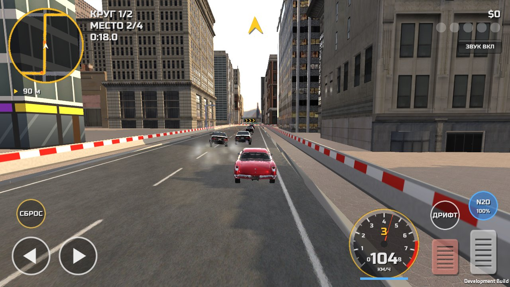
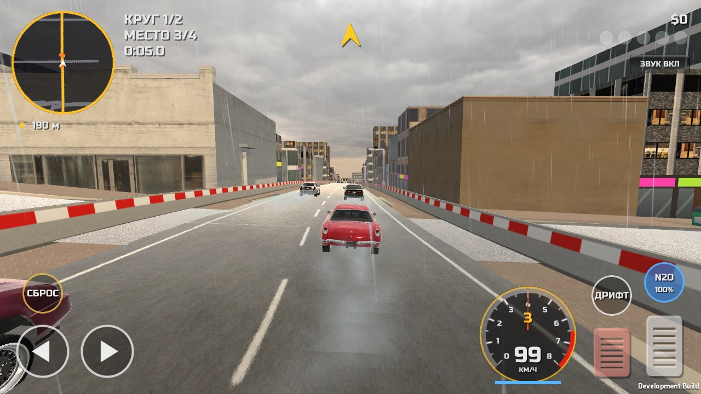
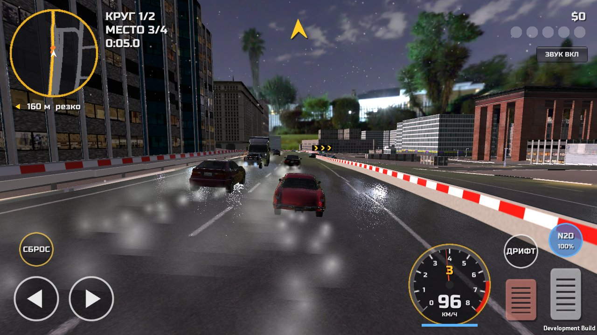
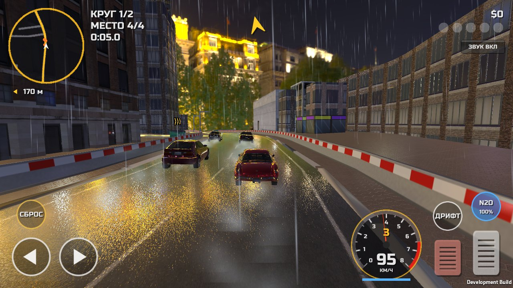
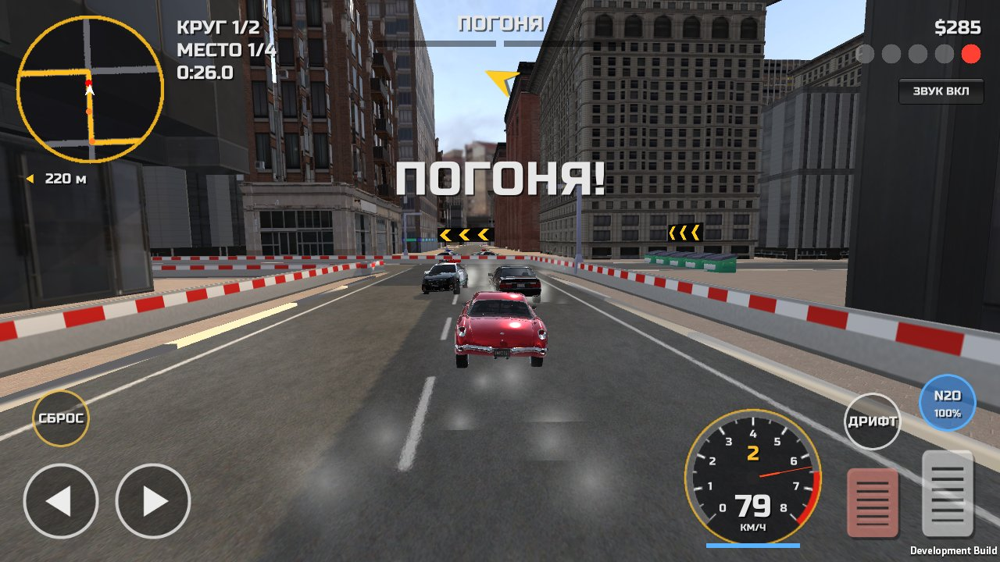
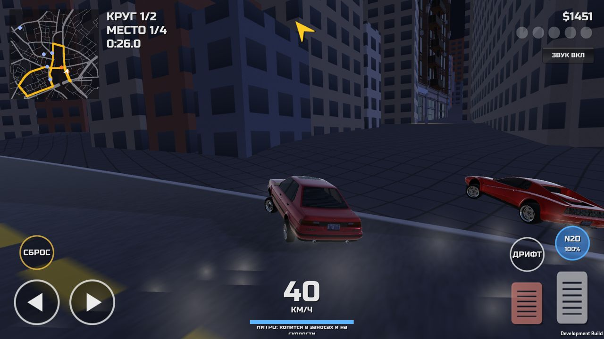
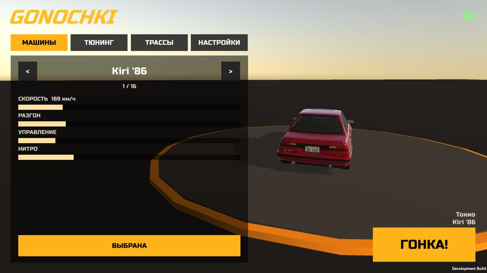
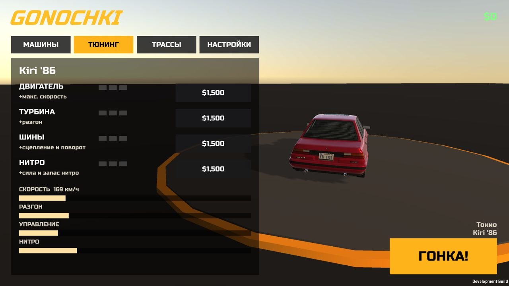
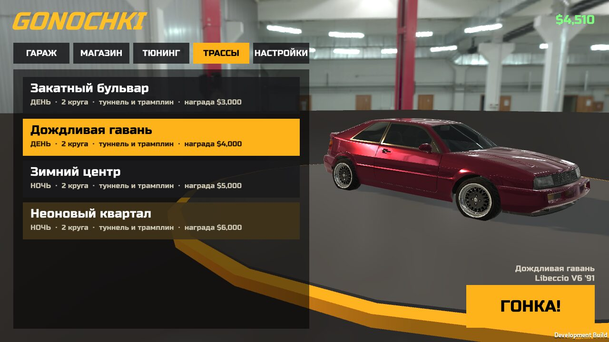

Уличные гонки по настоящим улицам Лос-Анджелеса, Сан-Франциско, Москвы и Токио. 16 машин, тюнинг, полицейские погони, дождь и снег, ночные заезды и холмы с трамплинами. Интернет не нужен.









Улицы, кварталы и рельеф взяты из OpenStreetMap: даунтаун Лос-Анджелеса, холмы Сан-Франциско, Тверская в Москве и Сибуя в Токио. Каждая трасса — замкнутый круг по улицам, огороженный отбойником.
В Сан-Франциско и Токио льёт дождь и блестит мокрый асфальт, в Москве идёт снег, в Лос-Анджелесе в воздухе висит пыль. Из-под колёс летят брызги, в заносе валит дым, об отбойник сыплются искры.
Два города днём, два ночью: горят окна и фонари, у тебя включены фары, а мигалки копов освещают улицу.
От гольф-кара и старой Kiri до суперкаров Slayer EXP и Saba V12. У каждой своя скорость, разгон и управляемость.
Двигатель, турбина, шины и нитро, у каждой детали 3 уровня. Каждое улучшение меняет физику машины.
Пронёсся мимо патруля на скорости, и начинается погоня. Уровень розыска растёт до 5, с третьего подключаются перехватчики. Остановишься рядом с копами, и будет BUSTED.
Аркадный режим: машина слушается руля на любой скорости, а длинный занос включается только ручником. Можно переключить на «реализм» в настройках. Подвеска, крены, трамплины на холмах. Фонари, баки и конусы можно сбить, но столб так просто не снесёшь.
Награда за место в гонке и за время в погоне. Тратишь её на новые машины и тюнинг.
Три уровня графики: на «низко» без теней и эффектов, на «высоко» с bloom, цветокоррекцией и сглаживанием.
| Влево / вправо | Кнопки слева внизу |
| Газ / тормоз | Кнопки справа внизу (тормоз на месте — задний ход) |
| Дрифт | Ручник: зажми в повороте |
| Нитро | Кнопка N2O. Заполняется в заносах и на скорости, процент виден на кнопке |
| Сброс | Вернуть машину на трассу, если перевернулся или застрял |
| Куда ехать | Стрелка вверху экрана и миникарта с маршрутом |